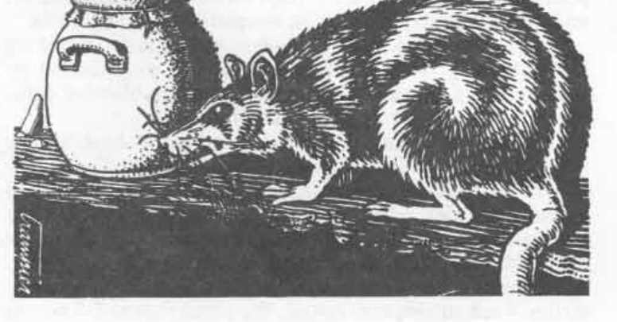

小鼠兽 · Camprat
小鼠兽 Camprat
 |
|
小鼠兽是食欲旺盛的啮齿动物，其贪吃程度与它们的体型完全不相称。它们通常无害，但把牙齿咬进任何可食物品的能力，会给旅行者带来令人恼火的麻烦。小鼠兽在大陆各地还有许多其他名称，其中大多数不适合印刷。
外貌：小鼠兽的外貌类似草原犬或小型地鼠。它们的毛皮颜色从浅褐色、沙棕色到深棕色不等，背部有一条黑色条纹。它们有一小截尾巴。它们的眼睛又小又亮，门牙又长又锋利。小鼠兽移动非常迅速，几乎什么东西都能攀爬。
战斗：小鼠兽胆小，只有被逼入绝境时才会战斗。不过，如果必须战斗，它们剃刀般锋利的门牙能像刺穿薄布一样轻易咬穿皮革。小鼠兽宁愿逃跑，也不愿战斗——它们会攀爬、跳跃越过，或啃穿任何障碍。与普通鼠类不同，小鼠兽很干净，因此不会带来显著的疾病风险。由于移动非常迅速，它们很难被击中（因此拥有相对较高的护甲等级）。
栖息地／社会：像老鼠一样，小鼠兽生活在松散结合的群体中，雄性和雌性数量大致相等。群体没有首领，也谈不上任何组织。
雌性每九个月交配一次，每胎产下 6–8 只幼崽，其中通常有三分之二能够存活。雌性怀孕并抚养幼崽期间（大约 3 个月），会留在巢穴中（通常是小洞穴、岩石间的缝隙，或自己挖出的洞）。这段时间，雄性会为雌性和幼崽带来食物。幼崽成熟并离开巢穴后，雄性和雌性便各自分开。
小鼠兽移动迅速，能够做出惊人的跳跃：水平最远 8 英尺，垂直最远 3 英尺。它们可以攀爬任何能让小爪子获得哪怕一点点抓力的表面。它们的门牙会不断生长，因此必须啃咬东西，以防牙齿长得过长。这种啃咬也能使牙齿保持锋利。小鼠兽可以在 5 秒内咬穿厚布（例如袋子），15 秒内咬穿薄皮革，30 秒内咬穿厚皮革。即使木头也不成问题：它们可以在 60 秒（软木）到 90 秒（硬木）内啃穿一英寸木头。
小鼠兽的食谱很简单：只要不是着火的东西，它们都会吃。它们不断地搜寻食物，并会不惜一切代价偷走食物。旅行者通常采取的预防措施——把食物整夜存放在厚皮袋里，或把它挂在树枝上——并不能阻止小鼠兽，因此它们成了穿越荒地和丘陵的人们的主要麻烦。
有经验的旅行者常常可以通过该地区的死树得知小鼠兽的存在：这些生物会啃树皮，经常啃到树干“环剥”并杀死树木。小鼠兽在大多数丘陵和荒地都令人恼火地常见，包括赫斯特马克高地、阿博尔-阿尔兹和克朗山丘。事实上，有传说称，几百年前一位侏儒国王曾用十年时间试图清除克朗山丘的小鼠兽（当然没有成功）。
生态位：小鼠兽是纯粹的食腐动物，会吃找到的一切，但不会狩猎。它们有理由胆小：许多大型食肉动物把小鼠兽视为美味佳肴。食人魔喜欢活的小鼠兽，而红龙经常向小鼠兽洞穴喷火，然后挖出里面烤熟的点心。